1. 简单的文本处理命令
1.1. less
opposite of more
查看文本文件内容
less 查看文件时，常用的键盘命令
- vim 中的上下滚动命令均适用
- /characters ：向前查找指定字符串
- q ：退出 less
less filename
history | less
- 内容界面操作快捷键

1.2. cat
concatenate files and print on the standard output
合并文件
读取一个或多个文件，并把它们复制到标准输出文件中
选项
-A显示文本中的非打印字符-n对行编号-s禁止输出多个空白行
cat file...
cat file... > result_file # 将 files 合并为 result_file
cat file* > result_file # 通配符一般都是按顺序扩展的
cat -n file # 会对行进行编号
cat > file # 从标准输入读取内容，并重定向到 file 中
cat # 没有重定向，这样会输出到标准输出
# Ctrl-D 用于输入文件尾(end-of-file, EOF)
1.3. sort
sort lines of text files
sort 是一个排序程序, 它的操作对象为标准输入或是命令行中指定的一个或多个文件后将结果送至标准输出。
通过引入 sort 命令，可以改变输出数据，从而产生一个排好序的列表
由于 sort 命令允许多个文件作为其输入参数, 所以可以将多个文件融合为一个已排序的整体文件。
选项
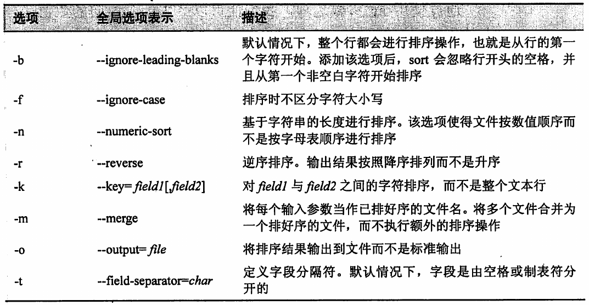
采用多键值进行排序的语法
sort --key=1,1 --key=2n distros.txt- --key=1,1 等价于 -k1
- --key=2n 等价于 -k2n
- 写在前面的 key，排序权重高。
- 2n 表示 "第二个字段是排序的键值, 并且按照数值排序"。
- 一个选项字母可能包含在一个键值说明符的末尾, 用来指定排序的种类。 这些选项字母与 sort 命令的全局选项一样: b(忽略开头空白字符)、n(数值排序)、r(逆序排序)等。
sort 的 key 选项允许在字段中指定偏移。
sort -k3.7nbr -k3.1nbr -k3.4nbr distros.txt- -k3.7 表示从第3个字段的第7个字符开始排序。
示例
sort > file.txt # 通过标准输入写文件，并排序。
sort -n 1.txt 2.txt # 将多个文件融合为一个已排序的结果
ls /bin /usr/bin | sort | less
1.4. uniq
report or omit repeated lines
报告或忽略文件中重复的行
uniq 可以接受来自于标准输入或者一个文件名参数对应的已排好序的数据列表
默认情况下，uniq 会删除列表中的所有重复行
需要查看重复行的列表，可以在 uniq 命令后添加 -d 选项
给定一个已排好序的文件(包括标准输入)后, uniq 会删除任何重复的行并将结果输出到标准输出中。注意，
uniq 只能移除相邻的重复行。uniq 通常与 sort 结合使用以删除 sort 输出内容中重复的行。
GNU 版本的 sort 支持 -u 选项，用于移除 sort 输出内容中的重复行。
选项
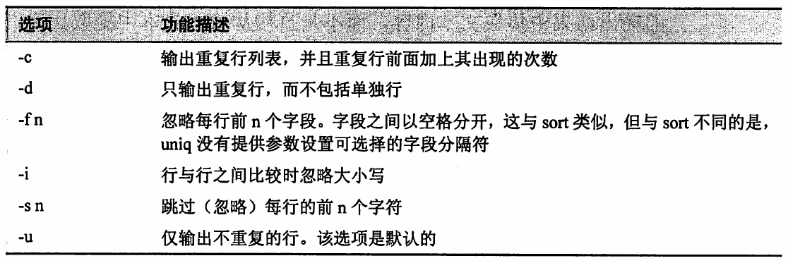
- 示例
ls /bin /usr/bin | sort | uniq | less
ls /bin /usr/bin | sort | uniq -d | less
1.5. cut
remove sections from each line of files
删除文本行中的部分内容
cut 命令用于从文本行中提取一段文字并将其输出至标准输出。它可以接受多个文件和标准输入作为输入参数。
选项
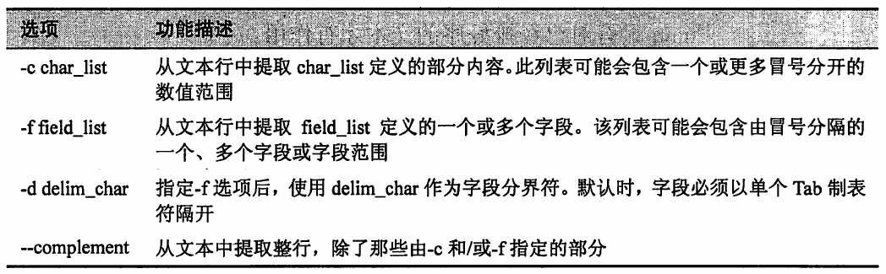
- 示例
cut -d ':' -f 1 /etc/passwd | head
1.6. paste
merge lines of files
合并文本行
paste 命令是 cut 的逆操作, 它不是从文本文件中提取列信息, 而是向文件中
增加一个或是更多的文本列。paste 命令读取多个文件并将每个文件中提取出的字段结合为一个整体的标准输出流。
paste 可以接受多个文件输入参数和标准输入。
示例
# 1.txt
# 1
# 1
# 1
# 2.txt
# 2
# 2
# 2
paste a.txt b.txt
# 1 2
# 1 2
# 1 2
1.7. join
join lines of two files on a common field
连接两文件中具有相同字段的行
join 是一个基于共享关键字段将多个文件的数据拼接在一起的操作。
文件必须事先依据共有关键字段排好序, 只有这样 join 才能正常工作。
默认情况下, join 会把空格当作输入字段的分界符, 而以单个空格作为输出字段的分界符, 当然也可以通过指定参数选项改变这一默认属性。
示例
# 1.txt
# l 1
# m 1
# n 1
# 2.txt
# l 2
# m 2
# n 2
join 1.txt 2.txt
# l 1 2
# m 1 2
# n 1 2
1.8. expand 和 unexpand
convert tabs to spaces
convert spaces to tabs
对文本文件中的空格和制表符进行相互转换
expand
- Tab => Space
unexpand
- Space => Tab
1.9. comm
compare two sorted files line by line
逐行比较两个已排序文件
comm 命令一般用于文本文件之间的比较，显示两文件中相异的行以及相同的行。
comm 输出了三列内容。第一列显示的是第一个文件中独有的行, 第二列显示的是第二个文件中独有的行, 第三列显示的则是两个文件所共有的行。
comm 还支持 -n 形式的参数选项, 此处的 n 可以是 1、2 或者 3, 使用时, 它表示省略第 n 列的内容。
示例
# file1.txt
# a
# b
# c
# d
# file2.txt
# b
# c
# d
# e
comm file1.txt file2.txt
# a
# b
# c
# d
# e
comm -12 file1.txt file2.txt # 只显示两个文件共有的行
# b
# c
# d
1.10. diff
compare files line by line
逐行比较文件
与 comm 命令类似, diff 用于检测文件之间的不同。
diff 比 comm 更复杂, 它支持多种输出形式, 并且具备一次性处理大文件集的能力。
diff 通常被软件开发者用于检查不同版本的源代码之间的差异, 因为它能够递归检查源代码目录(通常称为源树)。
diff 的常见用法就是创建 diff 文件和补丁, 它们可以为诸如 patch 这样的命令所用, 从而实现一个版本的文件更新为另一个版本。
diff 的默认形式的输出结果是对文件差异的一个简洁描述。
1.10.1. 三种输出格式
默认格式(diff 改变命令格式)
- 默认形式中, 每一组改动的前面都有一个以“范围执行操作范围“形式(range operation range)表示的改变操作命令, 该命令会告诉程序对第一个文件的某个位置进行某种改变, 便可实现与第二个文件内容一致。
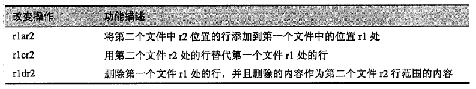
范围 range 一般是由冒号隔开的起始行和末尾行组成。
虽然, 此格式是默认的(大多数情况下是为了兼容 POSIX 的同时向后兼容传统 UNIX 版本的 diff), 但它并没有其他格式的应用广泛, 上下文格式和统一格式才是比较普道使用的格式。
diff file1.txt file2.txt
# 1d0
# < a
# 4a4
# > e
上下文格式
diff -c file1.txt file2.txt
# *** file1.txt 2021-08-02 16:19:24.000000000 +0800
# --- file2.txt 2021-08-02 16:05:50.000000000 +0800
# ***************
# *** 1,4 ****
# - a
# b
# c
# d
# --- 1,4 ----
# b
# c
# d
# + e
# 该结果以两个文件的名字和时间信息开头, 第一个文件用星号表示, 第二个文件用破折号表示。
# 输出结果的其余部分出现的星号和破折号则分别表示各自所代表的文件。
# 其他的内容便是两个文件之间的差异组,包括文本的默认行号。
# 第一组差异, 以 ***1,4**** 开头, 表示第一个文件中的第 1 行至第 4 行; 第二组便以 ---1,4---- 开头, 表示第二个文件的第 1 行至第 4 行。
# 每个差异组的行都以 diff 上下文格式差异标识符开头。
- diff 上下文格式的差异标识符
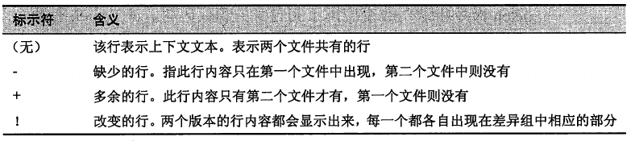
统一格式
统一格式与上下文格式相似但是更简明, 此格式用 -u 选项指定。
上下文格式和统一格式之间最显著的区别就是, 统一格式下没有重复的文本行, 这使得统一格式的输出结果比上下文格式的精简。
diff -u file1.txt file2.txt
# --- file1.txt 2021-08-02 16:19:24.000000000 +0800
# +++ file2.txt 2021-08-02 16:05:50.000000000 +0800
# @@ -1,4 +1,4 @@
# -a
# b
# c
# d
# +e
# @@ -1,4 +1,4 @@
# 表示差异组中描述的两个文件各自的行范围。
# 此字符串之后便是行本身, 其中包含默认的三行文本内容。
- diff 统一格式的差异标识符
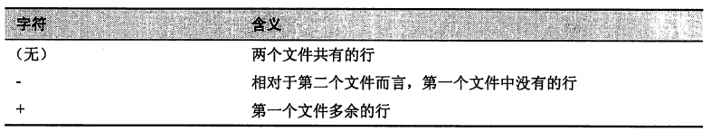
1.11. patch
apply a diff file to an original
对原文件进行 diff 操作
patch 命令用于更新文本文件。它利用 diff 命令的输出结果将较旧版本的文件升级成较新版本。 diff/patch 有两个重要的优点。
- 与源代码树的大小相比, diff 文件很小。
- diff 文件非常简洁地描述了文件所做的改变, 便于补丁的接收者快速对其进行评价。
diff/patch 不仅仅局限于源代码, 它适用于任何文本文件。
基本使用步骤
- 生成供 patch 使用的 diff 文件, GNU 文件系统建议采用如下方式使用 diff。
- diff -Naur old_file new_file > diff_file
- 此处 old_file 和 new_file 既可以是单独的文件也可以是包含文件的目录, 使用 -r 选项则是为了进行递归目录树搜索。
- 一旦创建了 diff 文件, 便可以将其用于修补原文件 old_file, 从而升级为新文件 new_file。
- patch < diff_file
- 生成供 patch 使用的 diff 文件, GNU 文件系统建议采用如下方式使用 diff。
示例
diff -Naur file1.txt file2.txt > patchfile.txt
patch < patchfile.txt
# 修补后，file1.txt 与 file2.txt 一致
- patch 有很多参数选项, 而且有很多额外的工具命令可以分析并编辑这些补丁文件。
1.12. tr
translate or delete characters
替换或删除字符
tr 是替换字符命令, 可以将其看作一种基于字符的查找和替换操作。
示例
echo "lowercase letters" | tr a-z A-Z # LOWERCASE LETTERS
tr 可对标准输入进行操作并且将结果以标准形式输出。
tr 有两个参数, 等待转换的字符集和与之相对应的替换字符集。
字符集的三种表示方式。
- 枚举列表；例如, ABCDEFGHIKLMNOPQRSTUVWXYZ。
- 字符范围；例如, A-Z。请注意, 这种方法有时会与其他命令一样受限于同一个问题(由于不同系统的排序顺序), 因此使用时要小心。
- POSIX 字符类；例如, [:upper:]。
多数情况下, 这两个字符集应该是同等长度；然而, 第一个字符集比第二个字符集长也是可能的。
echo "lowercase letters" | tr '[:lower:]' A
- 除了替换, tr 还可以直接从输入流中删除字符。
# 将 MS-DOS 类型的文本文件向 UNIX 类型转换。需要移除每行末尾的回车符。
tr -d '\r' < dos_file > unix_file
- tr 的一个有趣用法就是可以进行 ROT13 文本编码。ROT13 编码是将每个字母在字母表中向上移动 13 位。如果再执行此算法文本便可以恢复原样。
echo 'secret text' | tr a-zA-Z n-za-mN-ZA-M # frperg grkg
echo 'frperg grkg' | tr a-zA-Z n-za-mN-ZA-M # secret text
- tr 还有另外一个奇妙的用法。使用 -s 选项, tr 可以"挤兑"(删除)重复出现的字符。
- -s 指定的字符集会被去重
- 重复的字符集必须是毗邻的，否则该挤兑操作将不起作用
echo 'aaabbbccc' | tr -s ab # abccc
echo 'abcabcabc' | tr -s ab # abcabcabc
echo 'aaabbbccc' | tr -s cab # abc
1.13. wc
print newline, word, and byte counts for each file
打印行数、字数和字节数
wc 接受标准输入内容
选项
- -l：统计行(line)数
- -w：统计字(word)数
- -m：统计字符(char)数
- -c：统计字节(byte)数
1.14. grep(简单介绍)
print lines that match patterns
global regular expression print
详细介绍请参考
通过模式查找匹配的文本
grep 搜索文本文件中与指定正则表达式匹配的行, 并将结果送至标准输出。
grep pattern [file...]
grep [options] regex [file...]
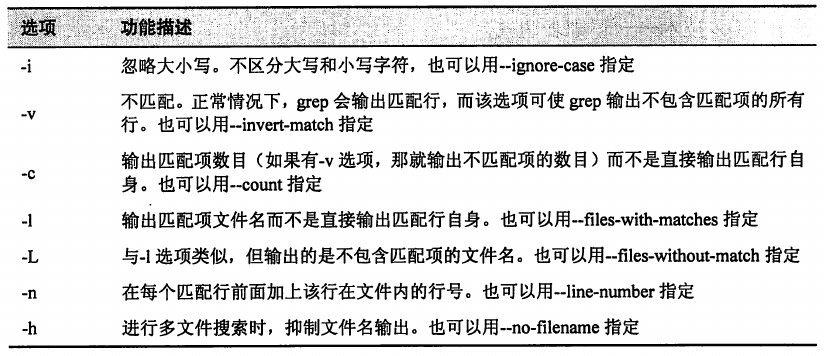
1.15. sed
stream editor for filtering and transforming text
详细介绍请参考
用于文本过滤和转换的流编辑器
sed 是 stream editor(流式编辑器)的缩写, 它可以对文本流、指定文件集或标准输入进行文本编辑。
sed 功能非常强大, 它是一个比较复杂的命令。
sed 的用法, 总得来说, 首先给定 sed 某个简单的编辑命令(在文本行中)或是包含多个命令的脚本文件名, 然后 sed 便对文本流的内容执行给定的编辑命令。
# 本例中的 sed 与 vi 中的替代(查找与替换)命令相似。
echo 'front' | sed 's/front/back/'
sed 中的命令总是以单个字母开头。
命令中分界符的选择是随意的，习惯上一般使用斜线，但是 sed 支持任意字符作为分界符, sed 会默认紧跟在 sed 的命令之后的字符为分界符。
# 使用 _ 作为分界符
echo 'front' | sed 's_front_back_'
sed 中的多数命令允许在其前添加一个地址, 该地址用来指定输入流的哪一行被编辑。如果该地址省略了, 便会默认对输入流的每一行执行该编辑命令。
最简单的地址形式就是一个行号。
echo 'front' | sed '1s/front/back/'
- sed 的地址表达法
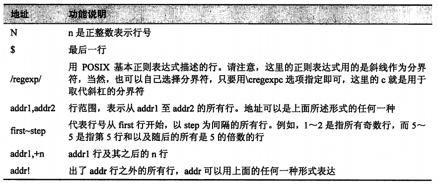
- sed 基本编辑命令
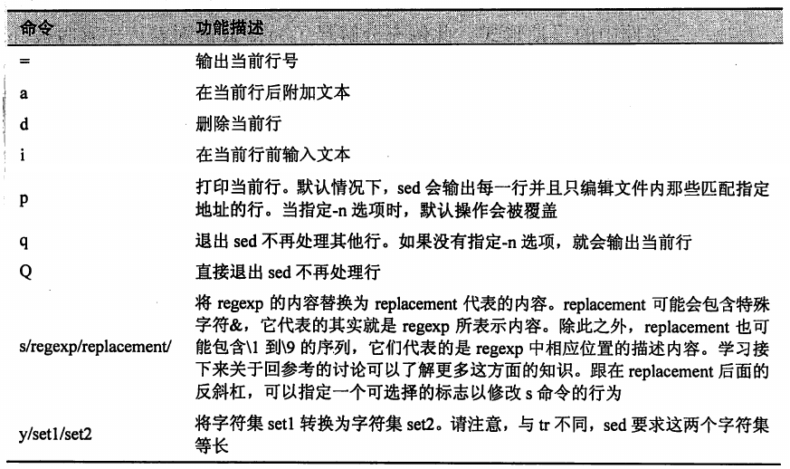
- s 命令的替换字符串后面可以紧跟可选择标志符。其中最重要的标志符就是 g, 该标志告诉 sed 对每行的所有匹配项进行替换操作, 而不是默认的只替换第一个匹配项。
echo 'aaabbbccc' | sed 's/b/B/'
aaaBbbccc
echo 'aaabbbccc' | sed 's/b/B/g'
aaaBBBccc
- 可以用 -f 选项建立更复杂的命令脚本文件。
sed -f sed_script input_file
sed 选项 -i 告诉 sed "原地"编辑文件, 这表示 sed 不会将编辑结果送至标准输出, 而是将改变后的文本重新写入文件中。
一个命令行中可以输入多个编辑命令, 只要用分号将它们隔开即可。
对于更复杂的文本流任务，可以使用 awk 和 perl
- awk：专业的文本数据处理工具
- perl：已经延伸到了完整的编程语言领域，可以用于取代 shell 脚本执行系统管理任务
1.16. ispell
Interactive spelling checking
交互式的拼写检查工具
aspell 作为其同功能工具，被推荐使用
1.17. aspell
interactive spell checker
交互式拼写检查工具，可以用于替换
ispellaspell 命令继承的是早期的 ispell 命令,并且多数情况下, 可以直接取代 ispell。
虽然 aspell 命令通常为那些需要进行拼写检查的程序所用, 但它同样可以作为一个独立于命令行的工具发挥其效用。它可以智能地检查不同类型文本文件的错误, 包括 HTML 文件、C/C++ 程序、email 消息以及其他专业的文本文件。
# 执行命令后，如果有拼写问题将进入交互式替换页面，如果没有将直接结束命令
aspell check textfile
除非额外指定了命令行选项 --dont-backup, 不然 aspell 将会创建一个包含原文本内容的备份文件, 此备份文件文件名则由原文件名加上后缀 .bak 组成。
aspell 默认会认为 HTML 标签的所有内容是拼写错误。该问题可以通过增加 -H 模式选项克服。
默认情况下, aspell 会忽略文本中的 URL 和 email 地址, 该行为可以通过设置命令行选项覆盖。同样也可以指定哪些标签内容需要被检查, 而哪些可跳过检查。具体内容, 可以查看 aspell 的 man 手册页。
1.18. split
split a file into pieces
- 将文件分成多个部分
1.19. csplit
split a file into sections determined by context lines
- 基于上下文将文件分块
1.20. sdiff
side-by-side merge of file differences
- 左右并排显示文件差异并作比较
1.21. head
output the first part of files
打印文件的开头部分。默认 10 行
选项
- -n：设置输出的行数
1.22. tail
output the last part of files
打印文件的结尾部分。默认 10 行
选项
- -n：设置输出的行数
- -f：用于实时查看文件最新内容
1.23. tee
read from standard input and write to standard output and files
- 从 stdin 读取数据，并同时输出到 stdout 和文件(可多个)
command1 | tee file... | command2
1.24. nl
number lines of files
对行进行标号
nl 命令是一个非常神秘的工具, 用于完成一个非常简单的任务, 对行进行编号。就其最简单用法, 与
cat -n很相似。和 cat 命令一样, nl 既支持多个文件名作为命令行参数, 也支持标准输入。然而, nl 可以进行多种复杂的编号, 因为它有许多参数选项, 且支持原始形式的标记。
nl 进行标号时支持一个叫做逻辑页的概念, 所以它可以重置数值序列。通过合理运用参数选项, nl 可以设置起始编号为特定的值, 并在有限的范围内设置其格式。
逻辑页可以进一步分解为逻辑页标题、正文和页脚。在每一个部分中, 行号都可以重置并/或分配不同的风格。
如果 nl 的输入参数是多个文件, 那么 nl 会把它们当作一个文本流整体。文本流中的每一个部分都由一些看起来非常奇怪的标记来区别。
nl 标记
- nl 常用选项
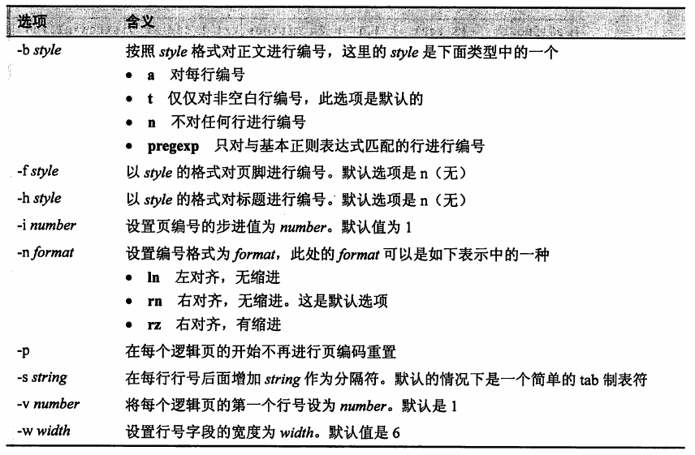
- 示例
nl -n rz
nl -w 3 -s ' '
1.25. fold
wrap each input line to fit in specified width
将文本中的行长度设定为指定长度
fold 是一个将文本行以指定长度分解的操作。fold 支持一个或多个文本文件或是标准输入作为输入参数。
示例
echo 'The quick brown fox jumped over the lazy dog.' | fold -w 12
# The quick br
# own fox jump
# ed over the
# lazy dog.
- 选项
- -w：指定行宽。如果没有指定行宽，默认是 80 个字符。
- -s：让 fold 在断行时考虑单词边界。默认并不会考虑单词边界。
1.26. fmt
simple optimal text formatter
简单的文本格式化工具
fmt 命令同样会折叠文本, 另外还包括更多其他功能。它既可以处理文件也可以处理标准输入, 并对文本流进行段落格式化。就其基本功能而言, 它可以在保留空白行和缩进的同时对文本行进行填充和连接。
选项
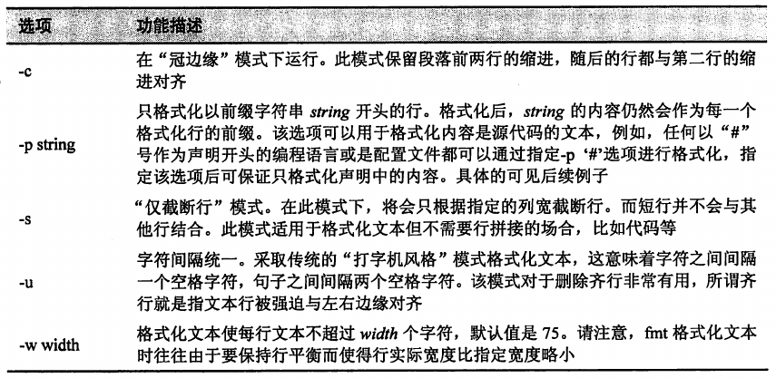
- 示例
fmt -cw 50 fmt-info.txt
fmt -w 50 -p '# ' fmt-code.txt # 只格式化以 '# ' 开头的行
1.27. pr
convert text files for printing
格式化打印文本
pr 命令用于给文本标页码。打印文本时, 通常希望将输出内容分成几页, 并且每页的顶部和底部都留出几行空白行, 这些空白行可以用于插入页眉和页脚。
选项
- -l：页长，定义一页的内容包含的行数
- -w：页宽，定义每行包含的字符数
示例
pr -l 15 -w 65 distros.txt
1.28. printf
format and print data
格式化并打印数据
printf 命令不适用于管道传输(也就是说它不支持标准输入), 而且在命令行应用中它也不常见(多应用于脚本文件)。
printf(print formatted)起初是为 C 语言开发的, 后来许多编程语言也都实现了这一功能, 也包括 shell 环境。
事实上, 在 bash 中, printf 是内置的。
printf 的用法
printf 'format' arguments
- 该命令行给出了一个包含格式说明的字符串, 然后将该格式应用于 arguments 所代表的输入内容, 最后格式化结果送至标准输出。
printf 'I formatted '%s' as a string.\n' foo
- 常用 printf 数据类型指定符
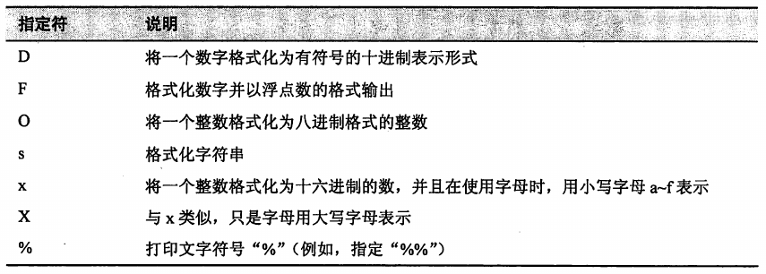
转换说明符也可以通过增加一些可选组件以对输出效果进行调整。
一个完整的转换规格可能会包含的内容
%[flags][width][.precision]conversion_specification
printf 转换规范的组成部分
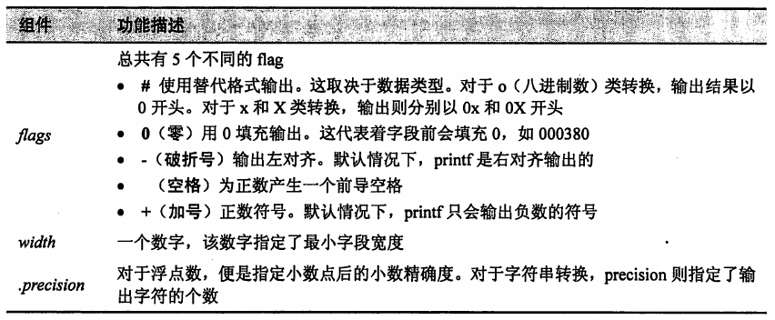
- printf 转换规范实例
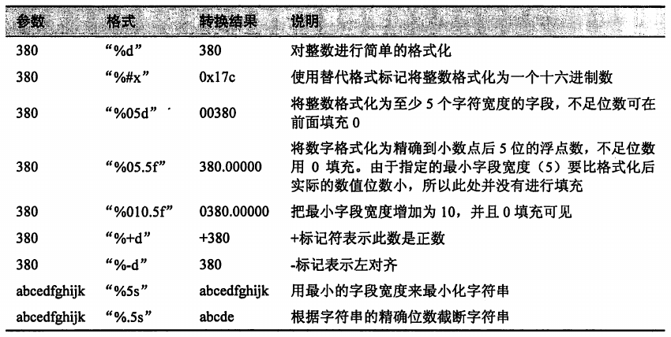
1.29. groff
front-end for the groff document formatting system
文档格式化系统
groff 其实是 GNU 实现方式的 troff 系列程序集, 它还包含一个用于模拟 nroff 及其他 roff 家族系列的程序功能的脚本。
虽然 roff 及其衍生体都是用来创建格式化文件的, 但是它们格式化的方式对于现代用户来说却非常陌生。
图形化文字处理器出现之前, 文档编辑通常包括两个步骤：使用文本编辑器编辑内容和使用诸如 troff 这样的程序进行格式化, 格式化程序的指令都已经通过标记语言嵌入到文本中。现代的网页制作过程与此过程相似。
对于 groff 的学习，应该把精力集中到被广泛应用的"宏包"上。这些"宏包"将许多低级命令压缩成一个很小的高级命令集, 从而使得 groff 使用起来容易得多。
示例
# 利用 groff 程序, 并设置参数指定为 mandoc 宏包以及 ASCII 的输出格式。
# groff 可以输出多种不同格式的结果, 如果未指定输出格式, 那么 PostScript 便是其默认输出格式。
zcat /usr/share/man/man1/ls.1.gz| groff -mandoc -T ascii
# 默认输出格式为 PostScript。
# PostScript 是一种页面描述语言, 一般用于描述送至类排字机设备打印的页面内容。
zcat /usr/share/man/man1/ls.1.gz| groff -mandoc
# 生成 PostScript 格式文件
zcat /usr/share/man/man1/ls.1.gz| groff -mandoc > ls.ps
# 生成 pdf 文件
ps2pdf ls.ps ls.pdf